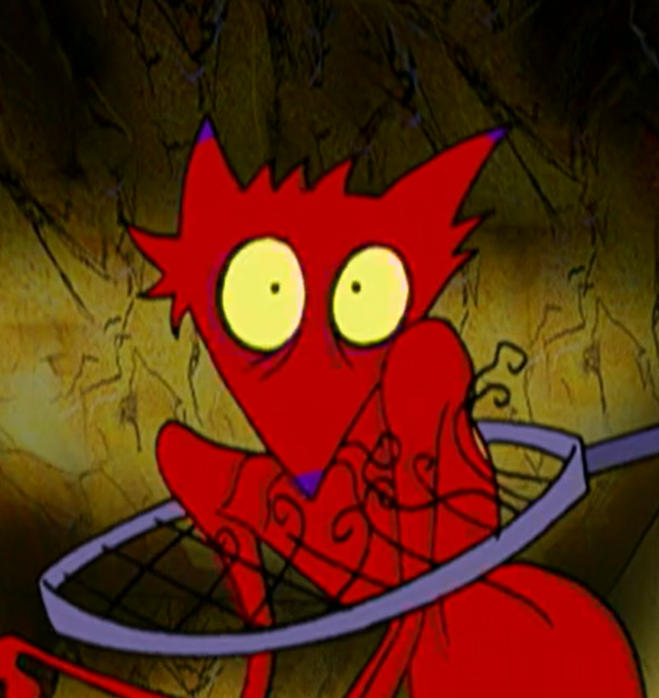
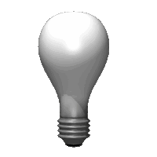

Hello!
Welcome to my site!
This is just a simple site for me to establish some sort of presence on the web and hopefully share some cool things
You are the
visitor
Controls
Windows and Taskbar
Drag a window by its title bar to move it. Click a window to bring it in front of the others.
Drag a window edge or corner to resize it. Windows inside a group cannot be resized until they are dragged out.
Use "_" to minimize a window and "X" to close it. Minimized windows can be restored from the taskbar, while closed windows are available through the Start menu.
The maximize button fills the available screen space. The restore button returns the window to its previous position and size.
When a grouped window is dragged out, use the dock button to return it to its original group position and size. Middle-click a taskbar window to close it.
Clock and Calendar
Hover over the taskbar clock to open the calendar. Use its arrow buttons to view other months. Click the clock to toggle between AM/PM and 24-hour time.
If the time is incorrect, it may be due to your browser's privacy settings.
Want to make your site look like this?
Updates
The updates section makes a GitHub API request and gets the commits of this sites repo
Cat
Click on the cat in the corner to wake it up
Add a cat to your siteMultiplayer Cursors
Those cursors you (may or may not) see around the page are other visitors to my site, if you press "t" then you can talk to them
Add Cursor party to your siteI am a ...
Teacher
I currently work as an instructor where I teach students k-12 about programming.
What I've taught
- Python
- Roblox Game Dev
- Cyber Security
- Web Dev
Programmer
I like making things and I like learning things so I became a programmer.
See what I've done
Student
Im currently working towards a Bachelors in Computer Science with Minors in Cybersecurity and Mathematics.
My Future Plans Are To:
- Pursue a Doctorate
- Continue teaching, preferably as a Professor
- Contribute to research, preferably in the HPC scene

Updates
Status
This Website
The WebMaster
To Do
Top Priority
- Add per window styling
- Add music and sound, with audio bars
Low Priority
- Add SplashScreen
- Add WallPaper Changer
- Secrets
- Paint
- Blog
- Cool Stuff Corner



_0.jpg&f=1&nofb=1&ipt=83064a8de1ae23ac8b1ed3645c9b6f9fb8e6c09cd7a616b0e5a4f81c6b155504&ipo=images)